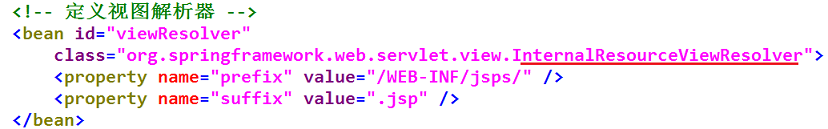

Spring MVC是Spring提供的一个实现Web MVC设计模式的轻量级Web框架。它与Struts2框架一样，都属于MVC框架，但其使用和性能等方面比Struts2更加优异。
Spring MVC具有如下特点：
①是Spring框架的一部分，可以方便地利用Spring提供的其他功能；
②灵活性强，易于与其它框架集成；
③提供了一个前端控制器DispatcherServlet，使开发人员无需额外开发控制器对象；
④可自动绑定用户输入，并能正确的转换数据类型；
⑤内置了常见的校验器，可以校验用户输入，如果校验不能通过，会重定向到输入表单；
⑥支持国际化。可以根据用户区域显示多国语言；
⑦支持多视图技术（JSP、Velocity和FreeMarker等视图技术）；
⑧使用基于XML的配置文件，在编辑后，不需要重新编译应用程序。
①用户通过Browser向Server发送请求，请求会被Spring
MVC的前端控制器DispatcherServlet拦截；
②DispatcherServlet拦截请求后，会调用HandlerMapping处理器映射器；
③处理器映射器根据请求URL找到具体的处理器，生成处理器对象及处理器拦截器（若有），一并返回给DispatcherServlet。
④DispatcherServlet会通过返回信息选择合适的HandlerAdapter（处理器适配器）；
⑤HandlerAdapter会调用并执行Handler（处理器），这里的处理器指的就是程序中编写的Controller类，也被称之为后端控制器；
⑥Controller执行完成后，会返回一个ModelAndView对象，该对象中会包含视图名
或包含 视图模型和视图名；
⑦HandlerAdapter将ModelAndView对象返回给DispatcherServlet；
⑧DispatcherServlet会根据ModelAndView对象选择一个合适的ViewResolver(视图解析器);
⑨ViewResolver解析后，会向DispatcherServlet中返回具体的View(视图);
⑩DispatcherServlet对View进行渲染（即将模型数据填充至视图中）；
⑪视图渲染结果会返回给客户端Browser显示。
(1)在IntelliJ中用Maven使用web模板，创建web项目springmvc01。
(2)完善Web项目结构，在src/main目录下创建java文件夹(设置为Source)
在src/main目录下创建resources文件夹(设置为resources)。
为springmvc01项目添加tomcat服务器。
配置 pom.xml文件，导入SSM所需要的依赖。
(3)打开webapp\WEB-INF\lib目录下的web.xml文件， 配置SpringMVC的前端控制器DispatcherServlet。可从模板中copy。
(4)在src/main/resources下，创建配置文件springmvc.xml， 在文件中配置控制器信息。可从模板中copy。
(5)在src/main/java下，创建包jmu.controller， 在该包下创建控制器类FirstController， 实现Controller接口。
修改springmvc.xml文件，配置处理器Handle， 添加映射“/firstController.do”请求。
(6)在webapp路径下，创建一个页面文件 myfirst.jsp，在该页面中使用EL表达式获取msg中的信息。
(7)启动项目，测试应用。
DispatcherServlet的全名是org.springframework.web.servlet.DispatcherServlet， 它在程序中充当前端控制器的角色。使用时，配置在 web.xml中。
org.springframework.stereotype.Controller注解类型用于指示Spring类的实例是一个控制器， 其注解形式为@Controller。 该注解在使用时不需要再实现Controller接口。只需要将@Controller注解加入到控制器类上， 然后通过Spring的扫描机制找到了该注解的控制器即可。
Controller接口的实现类只能处理一个单一的请求动作， 而基于注解的控制器可以同时处理多个请求动作， 因此在实际开发中通常都会使用基于注解的形式。
为了保证Spring能够找到控制类，还需要在SpringMVC的配置文件中添加相应的扫描配置信息，
具体如下：
(1)pom.xml中需有
spring-aop.jar的依赖，模板中已添加了；
(2)在配置文件的声明中引入spring-context，springmvc.xml的模板中已添加了；
(3)使用<context:component-scan>
元素指定需要扫描的类包。
Spring通过@Controller注解找到相应的控制器类后， 还需要知道控制器内部对每一个请求是如何处理的， 则需要使用org.springframework.web.bind.annotation.RequestMapping注解类型。 @RequestMapping可以使用注解在一个方法 或 一个类 上。
常见的请求处理方法的返回类型有ModelAndView、String。
(1)ModelAndView类型可以添加Model数据，并指定视图；
(2)String类型的返回值可以跳转视图，但不能携带数据； （可以通过Model类型的输入参数携带数据）

案例：基于注解的Spring MVC应用
(1)在web项目springmvc01中，打开路径 src/main/resources下的springmvc.xml配置文件，添加扫描配置。
(2)在src/main/java下的包jmu.controller 包下创建类SecondController， 在类和方法上添加相应的注解，不需要再实现Controller接口。
(3)在webapp路径 下创建页面文件mysecond.jsp。
(4)启动项目，测试应用。